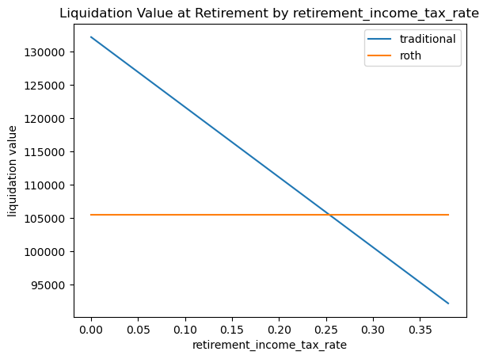
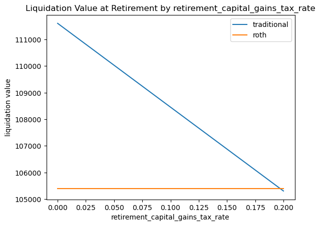
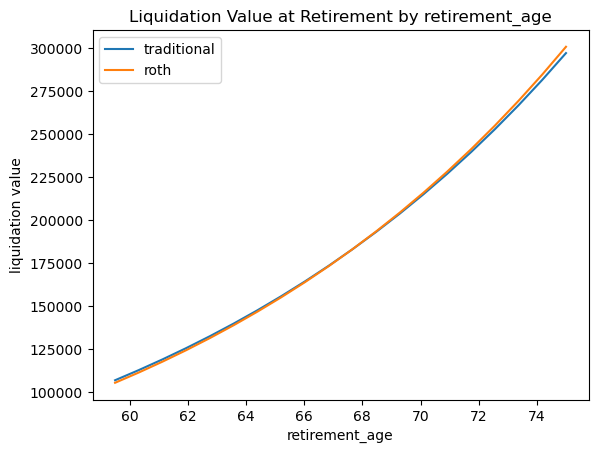

import numpy as np
import pandas as pd
import matplotlib.pyplot as plt Analyzing After Tax Retirement Income: Roth vs. Traditional 401(k)
personal finance
Quantitative analysis of Roth vs. traditional 401(k)—which is better for you?
Today we’re taking a break from our typical hard hitting algorithm deep dives for a quick foray into the world of personal finance. We’ll take on a question I recently encountered while setting up my retirement account with my new employer—which is more efficient, the traditional 401(k) or the Roth 401(k)? US-based readers will recognize these as the two main types of employer-sponsored retirement accounts. When I searched for traditional vs Roth 401(k), the articles I found gave only very hand-wavy guidance on which is better in a given situation. So, today I’ll share my quantitative analysis of which account type provides superior performance for a given set of personal circumstances. We’ll implement the analysis in python, so you can run the numbers for your own situation and determine which employer-sponsored account type is better for you.
Traditional 401(k) vs Roth 401(k)
I’ll let JLCollins explain the background on 401(k)s; read that post first if you’re not already familiar with the concepts of taxable accounts, IRAs, 401(k)s, and the basic rules of Roth vs traditional. The key distinction is * In a traditional 401(k), money you contribute now is deducted from your taxable income, meaning you’ll pay less in income tax now. During retirement however, withdrawals from the account will count toward your taxable income, so you’ll pay tax then. * In a Roth 401(k), money you contribute now does count toward your taxable income, meaning you’ll pay income tax on any contributions now. During retirement however, withdrawals do not count toward your taxable income and are therefore tax free.
Essentially you can either pay tax now (Roth) or pay tax later (traditional). The hand-wavy advice points out that which account is better for you depends on your income tax rate now versus your income tax rate during retirement. High tax rate now and low tax rate during retirement could favor traditional, while low tax rate now and high tax rate during retirement could favor Roth. Let’s put some numbers on this advice.
I’ll assume that you’re following the sage advice of Mr. Money Mustache and (after paying off any high-interest debt) maxing out your 401(k) contribution for the year. In 2024, the IRS has set a maximum combined contribution of $23,000; i.e. the sum of your Roth and traditional contributions cannot exceed this limit. Also, once you contribute to these accounts, you may not begin withdrawals (without penalty) until the age of 59.5.
Analysis Formulation
Let’s state the question precisely—which account type will yield me the most money during retirement after withdrawal and after all taxes are paid? Let’s think through the Roth vs traditional scenarios, setting aside the same amount of money today and liquidating the entire account at retirement; we’ll compare how much money we have at retirement after liquidating and settling any tax obligations.
Roth: I contribute contribution = 23_000 now, plus I pay income tax on this contribution in the amount of current_income_tax_rate * contribution. Over the years from now to retirement retirement_age - current_age, my contribution grows at some average long term yearly rate investment_growth_rate. At retirement, I liquidate the entire account, paying no income tax on the proceeds.
Traditional: I contribute contribution = 23_000 now. For fair comparison with the Roth, I invest an additional amount current_income_tax_rate * contribution (the extra income tax I would have paid had I chosen the Roth) in a normal taxable investment account as well. Over the time from now to retirement, the 401(k) and the taxable account both grow at the average long term rate investment_growth_rate. However, in the taxable account, I’ll also need to pay income tax every year on any dividends that I earn; the S&P500 has recently paid out 1.5-2% in dividends each year, let’s call it dividend_rate. At retirement, I liquidate both accounts, paying income tax on the proceeds from the 401(k) at the rate of retirement_income_tax_rate and paying capital gains tax on the proceeds from the taxable account at the rate of retirement_capital_gains_tax_rate.
Let’s code up a function that takes in all our parameters and returns the total liquidation value after taxes of the Roth versus traditional 401(k)s as described above.
def get_401k_liquidation_value(
current_age = 37,
current_income_tax_rate = 0.35,
contribution = 23_000,
retirement_age = 59.5,
investment_growth_rate = 0.07,
dividend_rate = 0.02,
retirement_income_tax_rate = 0.24,
retirement_capital_gains_tax_rate = 0.15 # 0%, 15%, 20%
):
investment_growth_factor = (1 + investment_growth_rate) ** (retirement_age - current_age)
dividend_income_tax_drag_factor = (1 - dividend_rate * current_income_tax_rate) ** (retirement_age - current_age)
# Roth 401k
roth_401k_value = contribution
roth_401k_value *= investment_growth_factor
total_roth_401k_liquidation_value = roth_401k_value
# traditional 401k
traditional_401k_value = contribution
taxable_account_value = current_income_tax_rate * contribution
traditional_401k_value *= investment_growth_factor
taxable_account_value *= investment_growth_factor * dividend_income_tax_drag_factor
traditional_401k_value *= (1 - retirement_income_tax_rate)
taxable_account_value *= (1 - retirement_capital_gains_tax_rate)
total_traditional_401k_liquidation_value = traditional_401k_value + taxable_account_value
return {
'traditional': round(total_traditional_401k_liquidation_value),
'roth': round(total_roth_401k_liquidation_value)
}get_401k_liquidation_value(){'traditional': 106882, 'roth': 105405}Somehow it’s not surprising that these two options seem to yield very similar after-tax performance—no arbitrage right?
Let’s write a function to perturb some of our parameter values to see under what conditions one option dominates the other.
def plot_liquidation_value_by_parameter_values(param, grid_values, func=get_401k_liquidation_value):
y = [func(**{param: x}) for x in grid_values]
df = pd.DataFrame(y, index=pd.Series(grid_values, name=param))
fig, ax = plt.subplots()
df.plot(ax=ax)
plt.ylabel('liquidation value')
plt.title(f'Liquidation Value at Retirement by {param}')
return fig, axIncome Tax Rate at Retirement
It seems that income tax rate at retirement is by far the most important determining factor in whether traditional or Roth 401(k) is a better option.
plot_liquidation_value_by_parameter_values('retirement_income_tax_rate', np.linspace(0, 0.38, num=20));
So given the other parameters I’ve set, Roth outperforms traditional when our income tax rate in retirement exceeds about 25%. According to the IRS in 2023, an individual tax payer is in the 24% bracket if their income is between about $95k and $180k. So, how much income do you expect to pull in retirement? If we’re really building FIRE wealth, the kind indicated by Mr. Money Mustache and JLCollins, our income in retirement could easily exceed $180k, which would push us into the 32% bracket where Roth is more efficient than traditional.
Capital Gains Tax Rate at Retirement
plot_liquidation_value_by_parameter_values('retirement_capital_gains_tax_rate', np.linspace(0, 0.20, num=20));
In 2023, according to the IRS as a single tax payer, if your income is between $44k and $492k, you’ll pay 15% capital gains. Over $492k you’ll jump up to 20% where Roth dominates traditional.
Retirement Age
plot_liquidation_value_by_parameter_values('retirement_age', np.linspace(59.5, 75, num=20));
For retirement ages beyond 59.5, traditional’s edge over Roth grows slightly.
Bottom Line
When I plugged in my actual parameters, I found that because I was only employed for 6 months last year, my current income tax rate pushed me into the regime where Roth performs better than traditional. However for this next year, I expect to be in a higher income tax bracket where traditional will be a better deal than Roth.
That said, the most important factor is your income tax rate at the time of withdrawal during retirement, which is based on your taxable income at that time. But how, I hear you asking, am I supposed to know what to plug in for my post-retirement income? That quantity is unknown. This illuminates the fundamental limitation of this kind of analysis—what to do about uncertain inputs to the calculation? That’s a question that we might take on in a future post, so stay tuned!